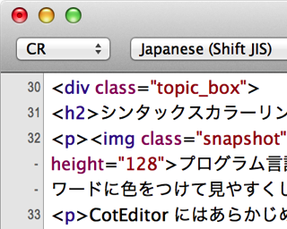
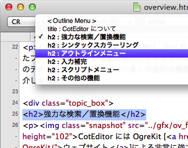
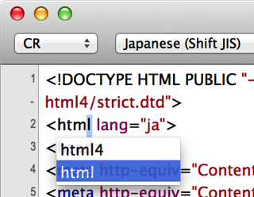
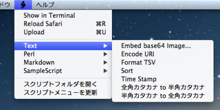

CotEditor について
CotEditor は Web ページ (HTML)、Perl や Ruby などのプログラム、TeX のソースといったプレーンテキストの編集に特化したテキストエディタです。CotEditor には Mac OS X 付属のテキストエディットにはない多くの便利な機能があります。このページではその一部をご紹介しましょう。
強力な検索／置換機能
 CotEditor には OgreKit [ウェブサイト]による非常に強力な検索／置換パネルが実装されています。
CotEditor には OgreKit [ウェブサイト]による非常に強力な検索／置換パネルが実装されています。
正規表現のサポートはもちろん、検索結果をまとめて一覧表示したり、ファイル中のマッチした箇所をハイライト表示したりすることもできます。
シンタックスカラーリング
プログラム言語の予約語や、TeX のコマンド、HTML の要素など特定のキーワードに色をつけて見やすくします。
CotEditor にはあらかじめいくつかのカラーリング定義がプリセットされていますが、ユーザが自由に登録／変更できます。また、カラーリング定義は単語だけではなく、正規表現によるパターン指定も可能です。
アウトラインメニュー
書類から特定のキーワードを含む箇所をリストアップして、メニューとして表示します。メニューをクリックすると、書類の該当する個所へ移動します。
メニューに表示する名前や項目はシンタックススタイルをカスタマイズすることで自由に設定できます。
入力補完
プログラム言語の予約語や、HTML の要素などのキーワードの入力を省略する機能です。
最初の数文字を入力して、ESC または F5 キーを押すと候補が表示され、一覧から選択して入力できます。表示する候補はカスタマイズできます。
スクリプトメニュー
スクリプトメニューに登録されたスクリプトを実行して、編集中の書類を加工したり、外部のプログラムを起動したりできます。
AppleScript のほか、Perl や PHP、Ruby、UNIX シェルスクリプトも利用できます。
その他の機能
- ファイルドロップ
- ファイルをドロップしたとき、あらかじめ指定しておいた定型文字列を挿入する機能です。例えば「HTML 書類に画像をドロップしたときに IMG タグを挿入する」といった使い方ができます。
- キーバインドのカスタマイズ
- CotEditor 独自の機能のキーバインドをカスタマイズできます。
- AppleScript との連携
- AppleScript により、作業の自動化が可能です。また、スクリプトメニューに組み込むこともできます。
- 外部エディタプロトコルのサポート
- Cyberduck [ウェブサイト] や Interarchy [ウェブサイト]、RBrowser [ウェブサイト] など、外部エディタプロトコルをサポートするアプリケーションと連携できます。サーバ上のファイルを直接開いたり、変更保存内容を直ちにアップロード更新できます。
- 行番号表示
- テキストファイルの行番号を表示します。プログラムの開発とデバッグの際に便利です。
- ウインドウの透明度設定
- ウインドウを半透明にできます。多数のウインドウを開いたときに探しやすくなります。
- 行間変更
- 行間の広さを変更設定できます。
- 非互換文字の表示
- 指定されたエンコーディングで保存できない文字をチェックできます。
- エディタを分割
- エディタを分割し、文書の異なる部分を同時に表示できます。